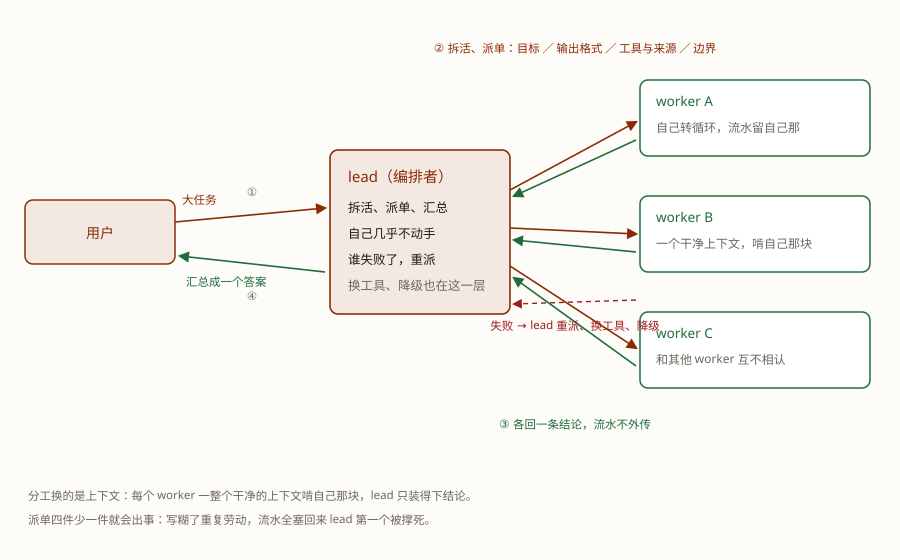

一个 agent 干不完的活，叫一群来干，是不是就更快、更好？不一定：多 agent 烧的 token 是单 agent 的好几倍，活太小，叫帮手纯属亏本。
真叫了帮手，问题才开始：活怎么拆？谁汇总？有人干砸了谁兜底？分工写不好，一群帮手比一个人更乱。
学完这课，你能：判断什么时候该上多 agent；说清多 agent 有哪几种连法、什么时候用哪种；说清怎么派活、失败了谁兜底；知道审计为什么适合派给子代理，以及 TeleAgent / OpenCode 各自怎么派。
多 agent 是用分工换上下文——每个 worker 只看自己那一摊，干完只回结论。这一课讲的，就是怎么把这句话兑现、什么时候不值得兑现。
先说反面：大多数活不该上多 agent。Anthropic 在自己的多 agent 调研系统里给过量级（他们自报的口径）：
该上的信号就三种：能并行的独立分身活（各查一个方向）、需要多个视角的活（正反两方、多个候选）、单个上下文根本装不下的活（一个 worker 啃一块，别硬塞一个脑子）。三种信号有一个共同点：活本身够大，而且拆得开。
决定要上，下一个问题就来了：一群 agent 怎么连起来干活？先看最常见的形状。
这种形状叫编排者-工作者：一个 lead（编排者）加一群 worker（工作者）。
自己几乎不动手，只做三件事：把大任务拆成边界清楚的子任务、派出去、收结论合成答案。
领到一个边界清楚的小目标，自己转自己的循环；干完只交结论，流水留在自己那儿。
每个 worker 必须拿到：目标（干什么）、输出格式（交什么）、用什么工具和来源（去哪找）、边界（别管什么）。
派单写糊了会怎样？Anthropic 的教训原话级大意：让 worker"调研一下半导体短缺"这种含糊指令，会让他们重复劳动、互相抄、留缺口；写成"列出 2024–2026 年关于 X 的 5 篇论文，每篇一句话摘要加链接"才跑得齐。只回结论不回流水同样关键——worker 的十万字流水全塞回 lead 的上下文，lead 第一个被撑死。
失败重派也是 lead 的活：worker 会失败（工具超时、模型跑偏），重派、换工具、降级都发生在编排层；别让每个 worker 自己写重试，重复建设还容易各错各的。

真要做多 agent，优先用成熟框架或产品，别自己手搓调度；这课只讲形状，不写编排脚本。
编排者-工作者是最常见的形状，但不是唯一的连法。把第 1 课第 5 节那张 workflow 谱系表拿来对照就清楚了：表里的链式、并行、编排者-工作者是步骤写死的流程，每一步是一次模型调用；多 agent 做的事，是把那些步骤换成一个个自己转循环的 agent。节点变重了，连法就从表里那几行长成一个谱系：
| 连法 | 长什么样 | 什么时候用 |
|---|---|---|
| 并行分身 | 拆法事先想得清楚，几路同时开、互不相认，结果由人或固定代码收尾 | 子任务能预先写下来——Anthropic Cookbook 的说法：这种用简单的并行就够，别上编排者 |
| 编排者-工作者（星型） | lead 现场拆活、派单、汇总，子任务不是预先定的 | 最优的拆法取决于任务本身——本课讲的就是它 |
| 收尾接力 | 干活的和收尾的分开：大家干完，把材料交给一个专职收尾的 agent | 最后一步是补引用、出格式这类固定工序——Anthropic 调研系统末尾就挂着一个补引用的 CitationAgent |
| 层层扩编 | worker 干着干着，再开自己的子代理 | 现在还很少真用：Anthropic 的生产系统是同步执行（一批干完再下一批），他们把异步扩编写在未来方向里，因为协调、状态、错误传播都更难 |
这张表的用法就两问：拆法能不能预先定？能就并行分身，不能才上编排者-工作者。有没有固定的收尾工序？有就再挂一段收尾接力。层层扩编先别急着上——协调成本比它省的还多。连法还能组合：Anthropic 的实际形状就是「编排者-工作者 + 收尾接力」，lead 派几路 worker 并行，最后交给 CitationAgent。
说回本课的主形。连法定了，还有更细的问题：活拆好了，哪些值得派给一个真正独立的 agent？
真正难的是判断哪一块该派。一个很实用的判据：这块活是不是需要一个不被当前上下文带偏的独立视角。
代码审计为什么特别适合派子代理？主代理刚写完代码，让它审自己，容易顺着自己的实现找理由——"这里我知道为什么这么写"。子代理从干净上下文进来，只看需求、diff、测试，角色是只读审计：找风险、给文件/行号、说理由，不给它改代码的权限。修不修、怎么修，回到主流程决定。
| 适合派 | 为什么 |
|---|---|
| 代码审计 / 安全 review | 写代码的人审自己容易有确认偏差；独立上下文只看证据，更适合挑错 |
| 多来源调研 / 事实核查 | 各查一路、互不干扰；最后只回结论和来源 |
| 方案对比 / 反方视角 | 需要多个独立判断，而不是一个脑子顺着第一条路走到底 |
| 大材料 / 长任务 | 一块料塞进一个上下文会互相干扰；分开啃，各自只回结论 |
不该派：
派单怎么写？还是四件，再加两条纪律：
目标：只读审计这次改动，找最可能出问题的 3 个点。
输出：每条给 文件:行号 / 风险 / 触发条件 / 建议，按严重程度排序。
工具与来源：只看 @src 下这次 diff 涉及的文件和测试，不参考主代理的自我解释。
边界：不要改代码；不确定就标"需人工确认"。
纪律：只回结论，不回流水；失败或超时就重派一次。不同 harness 的派法不一样。同样是"派个子代理"，TeleAgent 和 OpenCode 的操作入口、可控程度都不同：
| 问题 | TeleAgent | OpenCode |
|---|---|---|
| 谁决定派 | 主 agent 自动委派 | 主 agent 自动调用，或用户 @ 点名 |
| 用户能点名吗 | 这版手册没看到"选某个子代理"的入口 | 能：@general / @explore / @scout；自定义 agent 后 @name |
| 在哪看 | 任务监控里的「任务委派」 | 子会话 / 输出 |
| 适合 | 办公任务自动拆、少手动配置 | 代码探索/审计/调研，想明确控制谁去干 |
TeleAgent 怎么操作（按 2026-10-18 的手册）：把任务描述成"可拆的几路独立活"，发出去后展开任务监控里的 「任务委派」，看它有没有真的开子智能体。例如：
把这个任务拆成三路并行，分别做、各自只回结论：
1) 审计 @src 下这次改动，找 3 个风险，给文件:行号；
2) 查这次改动涉及的测试缺口；
3) 查这个依赖的最新 breaking changes。
最后按严重程度汇总；不要互相参考，也不要改代码。注意：这版手册只说明"任务委派"是子智能体执行过程，没有让用户点名某个子代理的入口。所以不要写成"@某个子代理"；如果它没派，可能是任务太小或模型判断不需要，你可以明确要求拆成几路，但不能保证一定派。
OpenCode 怎么操作（官方 Agents 文档）：它内置 general、explore、scout 等子代理，可以由主 agent 按 description 自动调用，也可以手动 @ 点名。想稳定让"审计"去干，@ 更可靠。要固定一个审计角色：在 .opencode/agents/ 写一个 review.md（description 写清"什么时候用它"），之后 @review 调用；具体配置看文档，这课不展开。
一句话：TeleAgent 是"把任务写得值得拆"，OpenCode 是"可以直接点名"；共同点是派单四件、只回结论，以及审计只读、修不修回主流程。
账算明白，剩下的就是别把这笔账亏掉：下面四条翻车，每一条都是账面上的一个窟窿。
这一课只回答了怎么把活分出去。但每个 worker 都要替你读外面的东西、替你动手——帮手越多，能读的东西、能动手的东西也越多。网页里一行小字，就可能让它替别人干活。下一课看这件事怎么发生、怎么堵。
Q1 一个任务三五个工具调用就能干完，该不该上多 agent？
Q2 lead 派单时，每个 worker 必须拿到什么？
Q3 worker 干完活，往回交什么？
Q4 worker 第一次跑失败了，该谁兜底？
Q5 拆法事先写得清楚、几路活互相独立，该用哪种连法？
Q6 多 agent 为什么反而常常更快？
Q7 代码审计为什么适合派给子代理？
Q8 按这版 TeleAgent 手册，用户怎么派子代理？
@mention、自定义 agent（2026-10-18 抓）。
前置：第 1 课（循环、工具、记忆、护栏；第 5 节 workflow 谱系是本课拓扑谱系的底图）· 第 2 课（单个循环先跑熟）· 第 4 课（工具与做法都备齐了，才轮到叫帮手）
顺着往下：Agent 篇 · 第 6 课 · 提示词注入与护栏：怎么不出事（帮手越多，口子越多——纸条攻击和三个"少"）
术语表：多智能体 · 上下文 · Agent 循环